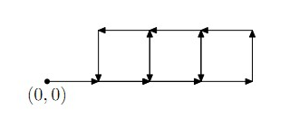
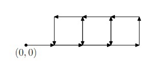

初始在(0, 0)
给你N个命令串 每个命令串包含若干命令
每个命令形式是 GO LEFT RIGHT Fk之一
GO 往前走1
LEFT 左转90度
RIGHT 右转90度
Fk 执行第k个命令串
f1: GO F2 GO F2 GO F2
f2: F3 F3 F3 F3
f3: GO LEFT
命令轨迹如图

| F.A.Qs | Home | Discuss | ProblemSet | Status | Ranklist | Contest | 入门OJ | ModifyUser Xeonacid | Logout | 捐赠本站 |
|---|
初始在(0, 0)
给你N个命令串 每个命令串包含若干命令
每个命令形式是 GO LEFT RIGHT Fk之一
GO 往前走1
LEFT 左转90度
RIGHT 右转90度
Fk 执行第k个命令串
f1: GO F2 GO F2 GO F2
f2: F3 F3 F3 F3
f3: GO LEFT
命令轨迹如图

HINT
N<=100
Ci<=100